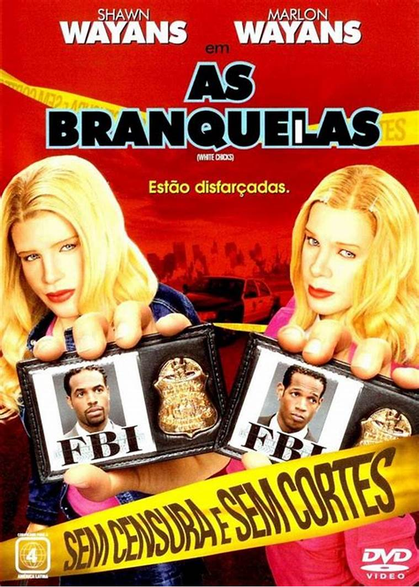
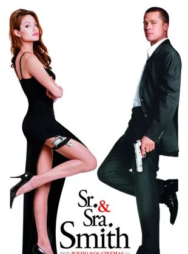

|
Em Gente Grande, Lenny, Kurt, Eric, Marcus e Rob se conhecem desde pequenos. Passados trinta anos, os cinco amigos se reencontram para curtir um fim de semana juntos com as respectivas famílias, mas o feriado de 4 de Julho em uma casa no lago promete muito mais diversão do que apenas lembranças dos bons momentos. Casados e com várias crianças, os homens de família terão de confrontar o fato de não serem mais tão jovens. Minha resenha: Amo de paixão esse filme, já assisti umas 2 vezes e não me canso. Muito divertido e legal de assistir e adoro as piadas e sempre dou muitas risadas. Recomendo tanto o primeiro quanto o segundo filme!! |
|---|---|
|  | Em As Branquelas, os irmãos Marcus e Kevin Copeland são detetives do FBI que estão com problemas no trabalho. Quando um plano para sequestrar as mimadas irmãs Brittany e Tiffany Wilson é descoberto, o caso é entregue aos principais rivais dos irmãos Copeland. Para aumentar ainda mais a humilhação da dupla, eles são escalados para escoltar as jovens mimadas do aeroporto até o local do evento. Porém no trajeto um acidente de carro provoca um desastre: uma das irmãs arranha o nariz e a outra corta o lábio. Desesperadas, elas se recusam a ir ao evento. É quando,para salvar o emprego, Marcus e Kevin decidem por assumir as identidades das irmãs. Minha resenha: Amo esse filme, muit engraçado e tem as melhores piadas e momentos. Muito legal ver eles arriscando o trabalho e relacionamentos para salvar somente duas modelos em uma investigação secreta. Amo demais e a dupla é perfeita nas atuações. Recomendo demais!! |
|  | John e Jane Smith trabalham como assassinos de aluguel. Eles são também casados, mas um não sabe do trabalho do outro e vivem atualmente uma vida entediada. A situação entre eles muda de rumo quando cada um recebe um novo trabalho de sua respectiva agência, que faz com que eles se encontrem para realizar a mesma missão. Minha resenha: APAIXONADA nesse filme. Simplesmente Brad Pitt e Angelina Jolie atuando juntos, tudo que o mundo precisa. Tem cenas muito engraçadas, como a cena do jantar e cenas que dão um nervosinho também. Apesar de não ter dado certo na vida real entre eles, no filme deu. Recomendo muuito! |